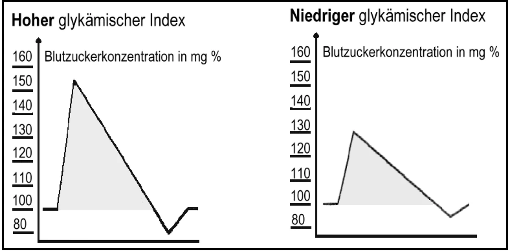

Diabetes
ALLGEMEIN: Diabetes mellitus ist eine Stoffwechselstörung, bei der es zu einer erhöhten Zuckerkonzentration im Blut kommt. Die Weltgesundheitsorganisation (WHO) erklärte Diabetes bereits 1999 zur Epidemie. Weltweit leiden 135 Millionen Menschen an Diabetes mellitus. Der Gesamtanteil der Diabetiker beträgt in der BRD ca. 5 %. Auf Grund der zahlreichen unerkannten Fälle des über einen langen Zeitraum oft asymptomatisch verlaufenden Typ-2-Diabetes muss jedoch von nahezu doppelt so vielen Betroffenen ausgegangen werden. Diabetes mellitus ist in allen Altersstufen die häufigste chronische Erkrankung mit oft schwerwiegenden Folgeerkrankungen. Als Diabetes-krank gilt - wer morgens nach einer nächtlichen Fastenperiode - immer wieder Glukosewerte von mehr als 126 mg/dl aufweist. Frühzeitig handeln: Mit Hilfe des Diabetes Schnelltest „BELTEST-IT-DIA“ können Betroffene feststellen, ob sie innerhalb der nächsten 5 Jahre Diabetes Typ 2 bekommen oder nicht, Arzt befragen.
2 Formen werden unterschieden:
- Typ 1 Diabetes (jugendlicher): Hier kommt es zu einem Totalausfall der insulinproduzierenden Beta-Zellen in den sogenannten Langerhans´schen Inseln, infolge einer Fehlreaktion des Immunsystems, das sich gegen körpereigenes Gewebe richtet und dieses zerstört. Der Zucker bleibt im Blut. Risikofaktoren für diesen Diabetestyp sind Gendefekte, bereits durchgemachte Virusinfektionen (z.B. Masern, Mumps, Grippe) und Autoimmunerkrankungen. Vitamin D3- Mangel. Mangel an Magensäure (siehe Sodbrennen). Typ 1 Diabetes tritt ohne Vorwarnung auf. Anmerkung: 10 % sind Fehldiagnosen, da keine Antikörper auf Typ 1 Diabetes bestimmt werden. (Ernährungs-Docs vom 22.06.2020) Hinweis: Es gibt gute Gründe bei Diabetes von Kindern den Milchkonsum zu hinterfragen (Professor Dr. Melnik/Uni Osnabrück). Body-Building ist nichts für Typ I-Diabetiker. (Professor Rolf Renner). Bei den mit dem Bodybuilding verbundenen kurzzeitigen Anstrengungen steige der Blutdruck systolisch auf Werte von 300 mm Hg und mehr. Dies führt zu einer Beschleunigung der diabetischen Schädigung der Mikrogefäße. Typ 2 Diabetes (Erwachsenen- oder Altersdiabetes): Das Auftreten dieses Leidens steht in enger Verbindung mit unserem Lebensstil/Wohlstand. Es ist hier geradezu fahrlässig, von ein bisschen Alterszucker zu sprechen. Wenn hier nicht rechtzeitig gegengesteuert wird, drohen schwerste Gefäßschäden (Angiopathien). Das Risiko, einen Herzinfarkt oder Schlaganfall zu erleiden sowie blind zu werden (Netzhautablösungen siehe Augen) steigt rapide an. Risikofaktoren für diesen Diabetestyp sind angeborene oder erworbene Insulinresistenz, familiäre Vorbelastung, höheres Alter, Tabak-/Alkoholkonsum sowie Bewegungsmangel. Chronisch, stille Entzündungen (siehe Entzündungen). Zahnbeläge/Plaques entfernen lassen (Zahnarzt).
Messen - Essen - Laufen
Mit diesen drei Maßnahmen: Blutzucker messen, entsprechend essen und dem Zucker davonlaufen, lässt sich ein beginnender Diabetes Typ 2 noch gut in den Griff bekommen.
Tipp: Wenn Sie den Insulinspiegel messen, piksen Sie seitlich in die Fingerkuppen, dabei spüren Sie kaum etwas, da hier weniger Nerven sind als auf den Fingerkuppen.
Risikofaktoren
URSACHEN: Bauchbetontes Übergewicht: Vor allem immer mehr Kinder und Jugendliche sind davon betroffen. Wer viel isst, braucht viel Insulin (jedes Kilo weniger bringt Sie der Heilung näher). Ca. 90 % aller Diabetiker könnten mit dem Bauch auch ihre erhöhten Blutzuckerwerte los werden. Bei einem Bauchumfang von > 102 cm bei Männern und > 88 cm bei Frauen besteht ein erhöhtes Risiko. Vier von fünf Menschen mit Typ 2 Diabetes wiegen zuviel, sie leiden oft unter einer Essstörung mit Heißhungerattacken (Binge-Eating), Arzt befragen. Weichmacher in PVC begünstigen Diabetes (TV-Sendung Odysso 5.2.2009). Rückblick z.B. 1948: Harte Arbeit, schmale Kost führte dazu, dass Typ 2–Diabetes in der Nachkriegszeit praktisch nicht vorkam. 1975: Leichte Arbeit, schwere Kost, lässt Diabetes rapide ansteigen. 2003: Hochrechnungen zufolge sind über 5 Millionen Menschen in Deutschland wegen Typ 2–Diabetes in Behandlung. In Indien ist Diabetes ein Statussymbol der Erfolgreichen.
- Hohe Homocysteinwerte.
- Hoher Blutdruck, hohe Blutfette, erhöhte Triglyceride und geringes HDL-Cholesterin, hoher Hämatokritwert (dickes Blut). Nikotin, Alkohol, Unwissenheit. Im Durchschnitt dauert es 7 Jahre, bis Diabetes erkannt wird, da er anfangs keine Schmerzen verursacht.
- Diabetes ist ein Risikofaktor für eine chronische Herzinsuffizienz, die wiederum ein Treiber der Insulinresistenz ist, eine unheilvolle Allianz.
- Übersäuerung (siehe Entsäuerung).
- Gluten-Unverträglichkeit (Weizen). Wussten Sie, dass Vollkorn Weizenbrot mit einem glykämischen Index von 72 den Blutzucker ebenso anhebt, wie Haushaltszucker? Weizenprodukte erhöhen den Blutzucker mehr, als praktisch jedes andere Nahrungsmittel.
- Zuviel Brot: Es ist eine komprimierte Form von Kohlehydraten. Sie führt dazu, dass wir prozentual am Tag viel zu viel davon zu uns nehmen. Das fördert Übergewicht und Diabetes.
- Allergien, Spulwürmer.
- Für Diabetiker ist eine Parodontitis besonders gefährlich. Beide Krankheiten treten häufig gemeinsam auf und verstärken einander. Eine behandelte Parodontitis kann den Insulinbedarf eines Diabetikers um bis zu 50 % senken (MDR Hauptsache gesund vom 28.07.2011).
- Bewegungsmangel: Erhöht das Risiko an Altersdiabetes zu erkranken ganz gewaltig. Wir sind heute ein Volk von Sitzern geworden. Wöchentlich 5 x 30 Minuten schnell gehen reichen aus, um das Diabetes-Risiko zu halbieren (Professor Dreyer - Diabetologe Diakonie Kliniken/Hamburg).
- Chronisch stille Entzündungen (siehe Entzündungen).
- Immer gut ausatmen (3 x länger aus- wie einatmen - siehe Atmung). Ansonsten entsteht Sauerstoffmangel im Blut.
- Zu wenig Magnesium erhöht das Diabetes-Risiko. Wird zu wenig Magnesium aufgenommen, ist das häufig mit einer beginnenden Insulinresistenz verbunden, die langfristig zur Entwicklung eines Diabetes beiträgt.
- Vitamin B1-Mangel: Menschen mit Diabetes scheiden das wichtige Nerven-Vitamin vermehrt aus. So ist bei Ihnen die Konzentration von Vitamin B1 im Blut oft um etwa 75 % niedriger, als bei gesunden Menschen. Das kann eine Neuropathie auslösen oder verschlimmern.
- Vitamin B12-Mangel: Es ist keine Aussage über den Vitamin B12 Status möglich, ohne eine zusätzliche Methylmalonsäure (MMA) – Messung. (Professor Obeid, Uni Klinik des Saarlandes, siehe Sodbrennen).
- Aber auch ein Mangel an Magensäure/Antiseptikum kann hier vorliegen (Test siehe Sodbrennen).
- Vorsicht Säureblocker! Werden jahrelang säureblockende Mittel gegen Sodbrennen eingenommen, besteht eine erhöhte Diabetes Typ 2 Gefahr. Laut einer Studie steigt das Risiko bei einer Anwendung von bis zu 2 Jahren um fünf, danach um 26 %.
- Magnesium- sowie Zinkmangel.
- Depressionen/Antidepressiva.
- Erhöhte Harnsäurewerte sind unter anderem auf Infektionen durch Hefen, Pilze und Mikroorganismen zurückzuführen, die uns Menschen als Wirt nutzen. Harnsäure bildet Alloxan und beide verursachen Diabetes.
- Statine/Cholesterinsenker können als Nebenwirkung den Blutzuckerspiegel und das Risiko für eine Zuckerkrankheit erhöhen (EU-Empfehlung sowie Hinweis des BfArM).
- Süßstoff enthält keinen Zucker und keine Kalorien, kann aber dennoch zu Diabetes II führen (Uni Washington).
- Zu viel Selen/Paranüsse erhöht das Diabetes-Risiko (Prof. Dr. Nawroth, Uniklinik Heidelberg).
- Schlafmangel, Stress.
SYMPTOME: Bei Diabetes gibt es typische Symptome, die jedoch nicht alle gleichzeitig auftreten müssen. Durst, trockener Mund, vermehrter Harndrang, auch nachts, Müdigkeit, Leistungsschwäche, rasche Gewichtsabnahme (Typ 1), Juckreiz, schwankende Sehstörungen, unscharfes oder verschwommenes Sehen, schlechte Wundheilung, brennende Füße, Schienbeinflecken, Wadenkrämpfe (insbesondere nachts), Muskelschwäche, Schwindel, Zittern, Harnwegserkrankungen, vermehrte Neigung zu Infekten. Heißhungerattacken, Kopfschmerzen, blaue Flecken auf der Haut. Knubbel hinter dem Ohr. Langfristig werden auch die Nieren stark belastet (Urin-Eiweiß-Test durchführen lassen) und es kommt zu Durchblutungsstörungen mit chronischen Infektionen und Geschwüren am Fuß (diabetischer Fuß). Außerdem leiden Diabetiker häufig an einer Nervenerkrankung (Polyneuropathie) mit Taubheitsgefühl/Kribbeln in Armen und Beinen bis hin zu starken Schmerzen und Lähmungen. Fragen Sie Ihren Arzt nach Alpha-Liponsäure, ein Wirkstoff, der die Nervenzellen versorgt (z.B. Thiogamma® 600 oral).
ERNÄHRUNG: Neueren Forschungen zufolge sollten Diabetiker keine einseitige strenge Diät - die zu Mangelerscheinungen führt - einhalten, sondern eine ganz normale, vielseitige, vollwertige Ernährung, wobei jedoch Fett, Eiweiß, Alkohol und Zucker sparsam zu verwenden sind. Für den Diabetiker sind 6 kleine Mahlzeiten besser, als 2 oder 3 große. Durch das Verteilen der Nahrung auf mehrere Mahlzeiten wird die in ihrer Funktion stark beeinträchtigte Bauchspeicheldrüse geschont. Hafer (täglich 30 g) senkt den Blutzucker durch die darin enthaltenen Ballaststoffe in 24 Stunden um bis zu 30 %. Haferflocken sind das gesündeste Nahrungsmittel für Diabetiker. Nüsse, Olivenöl, Bittergurken, Erbsen, Ingwer, Bittermelonen, Kürbis. Cylon-Zimt: Studien belegen, dass bereits 1g Zimt täglich den Nüchtern-Blutzucker um 30 % senken kann. Viel Hirse essen. Sie reguliert die Insulinproduktion. Viel rohes Sauerkraut sowie - Saft verzehren. Die insulinhaltigen Stoffe senken den Blutzucker. Curry-Gerichte, Sellerie, Kresse, Kurkuma. Diabetiker können durch Dinkelkörner deutlich Insulin einsparen, besonders wenn zusätzlich Bertram (Estragon) als Gewürz zugesetzt wird (Hildegard-Medizin). Omega-3-FS (siehe Öle/Fette).
Das Blutzuckergedächtnis
Der HbA1c-Wert ist der Parameter zur langfristigen Verlaufskontrolle der Blutzuckereinstellung und die Abkürzung für eine Form des Glykohämoglobins. Dieses entsteht, wenn sich die von roten Blutkörperchen aufgenommene Glukose mit dem Blutfarbstoff (Hämoglobin) verbindet. Normalerweise sollte der Anteil des HbA1c am Gesamthämoglobin beim Gesunden weniger als 7 % ausmachen. Ein Wert von 6,5 % ist optimal. Dieser Wert gibt den durchschnittlichen Blutzuckergehalt der letzten 6-8 Wochen wieder. Ab 7,5 % spricht man beim Diabetiker von einer schlechten Einstellung. Je höher dieser Wert ist, desto stärker ist die Verzuckerung und Verschlackung des Gewebes. Durch die Bildung von Glykohämoglobin (HbA1c) ist die Sauerstoffaufnahme der roten Blutkörperchen begrenzt, wodurch es zu einer Unterversorgung des Gewebes in der Peripherie kommt. Dadurch wird die Entstehung von Infektionen begünstigt.
Glykämischer Index

Der glykämische Index (GI) ist das Maß dafür, wie schnell oder langsam ein Nahrungsmittel im Vergleich zu Glucose (100 %) den Blutzuckerspiegel ansteigen und wieder abfallen lässt. Lebensmittel mit hohem Fruktoseanteil oder mit hohem Ballaststoffanteil wie Hülsenfrüchte und Dinkelvollkornschrot weisen einen niedrigen glykämischen Index auf. Hierdurch werden abrupte Blutzuckeranstiege und damit ein plötzlicher hoher Insulinbedarf vermieden. Bei Bananen beträgt dieser Index z.B. 53 %, das heißt Bananen erhöhen den Blutzuckerspiegel nur etwa halb so stark wie Glucose. Wer zu viel schlechte Kohlenhydrate mit einem hohen glykämischen Index (GI) isst - wie z.B. Weißbrot - bei dem steigt der Blutzuckerspiegel drastisch an und schnell wieder ab. Gerade Übergewichtige und Diabetiker sollten daher möglichst naturbelassenen Lebensmitteln, mit einem niedrigen glykämischen Index (GI) den Vorzug geben, denn dadurch schwankt der Blutzuckerspiegel nicht so stark. Weizenprodukte von neuen Hochleistungssorten meiden. Sie erhöhen den Blutzuckerspiegel schneller und höher als Kristallzucker (siehe Allergie).
Nahrungsmittel mit niedrigen GI
Alle Kohlarten, Gemüse, Salate, Pilze, Endivien, Avocado, Papayas, Mangos, Kiwis, Pflaumen, Zucchini, Quitten, Tomaten, Meerrettich, Sellerie, Gurken, Artischocken, Curry, Grapefruit.
Weitere wertvolle Nahrungsmittel
Topinambur (Süß- oder Diabetikerkartoffel), Hafer, Hirse, Bierhefe: wichtiger Bestandteil ist Vitamin B1, Dinkel, Buchweizen, Knoblauch, Bärlauch, Karotten (pflanzliches Insulin). Zwiebeln sind Freunde des Zuckerkranken. Süße Mandeln und Schwarzwurzeln. Linsen/Bohnen, Walnüsse täglich 30 g. Vereinfacht ausgedrückt: Kohlenhydrate in Form von Vollkornprodukten (Dinkel-Brot), Nudeln, Kartoffeln, Reis und Obst zum Sattessen (ca. 55 %). Generell wirkt sich ein hoher Ballaststoffgehalt im Essen günstig auf den Stoffwechsel aus. Gemüse und Salat in beliebiger Menge (fettarm zubereiten), Olivenöl (täglich 1 Esslöffel). Auch essigsaure Gurken sind sehr wirksam. Meiden Sie spätes Essen. Während der Nacht kann der Blutzucker nur noch schlecht in die Zellen aufgenommen werden.
MEIDEN: Die WHO empfiehlt nicht mehr als 50g Zucker pro Tag für einen Erwachsenen. (16 Würfel oder 6 Teelöffel) Das klingt einfach, ist aber in der Regel gar nicht so einfach einzuhalten. Zucker enthält keine Vitamine oder Mineralstoffe, dafür aber viele Kalorien. Ist ein Mensch mehr Zucker, als er braucht, wandelt der Körper die Energie des Zuckers in Fett um und speichert sie. Nicht immer steht das Wort Zucker im Zutatenverzeichnis. Auch Glukose, Dextrose, Fruktose, Laktose, Saccharose, Maltose, Stärkesirup, Weizendextrin, Süßmolkepulver, Magermilchpulver und anderes gehören zur großen Familie der Zuckerarten. Sparsam sein bei: Eiweiß (Fleisch, Wurst, Milchprodukte, Joghurt, Käse, Eier) belastet die Nieren, verursacht Säure im Körper und verstopft die kleinen Blutgefäße, so dass zu wenig Zuckermoleküle hindurch gelangen und es zum Rückstau von Zucker im Blut kommt. Organismus entsäuern. Fett macht Fett, liefert sehr viele Kalorien. So wenig Fett wie möglich, am Belag geizen. Weniger Fett spart Insulin. Omega-6-FS (siehe Öle/Fette). Alkohol, Zucker (Haushaltszucker, Traubenzucker, Glukosesirup, Honig, Ahornsirup, süße Getränke (z.B. Cola). Salzarm ernähren.
GETRÄNKE: Viel und möglichst kalorienfrei trinken (Tee, Wasser). Wassermangel in der Bauchspeicheldrüse behindert vor allem die Produktion von Insulin. Tausendgüldenkraut, Bohnenschalen (Cortex phaseolo fructus), die trockenen Hülsen enthalten insulinartige Stoffe, Heidelbeerblätter (Folia Myrtilli), Mistel, Salbei, Schwarztee, Grüner Tee. Fertigpräparat: Tee Nr. 11 (Nestmann-Apotheke). Qing Qian Teemischung aus einer abgelegenen Provinz in China. Diabetes ist dort unbekannt. Ein alter, leider etwas in Vergessenheit geratener Blutzuckersenker ist Essig. Nehmen Sie davon vor den Hauptmahlzeiten 2 Esslöffel (ca. 10 ml) zu sich, z.B. ein kleines Schnapsglas Rotwein-Essig als Aperitif (Studie Uni Arizona). Weinessig kann die Wirksamkeit von Insulin signifikant verbessern. Kalmuswurzeltee: 1 Teelöffel über Nacht kalt ansetzen, abseihen, aufwärmen, vor und nach den Mahlzeiten einen Schluck trinken. Apfelessig (2 Teelöffel/1 Glas Wasser) regt die Bauchspeicheldrüse an. Knoblauch/Zitronenkur (siehe Arteriosklerose). Rotwein gibt es zwar nicht auf Rezept. Doch in Maßen (1 Glas/täglich) genossen, ist der Rebensaft bei Altersdiabetes durchaus zu empfehlen (Diabetes-Ahr-Wein-Studie). Koffein verhindert Eiweißablagerungen im Gehirn. Menschen, die täglich 3-5 Tassen Kaffee trinken haben ein geringeres Risiko, an Typ 2 Diabetes zu erkranken.
Hyper glykämie
(> 200 mg/dl)
Die Überzuckerung des Blutes führt hier über eine saure Stoffwechsellage (siehe Entsäuerung) zur Azidose. Hierbei entsteht ein typischer azetonähnlicher Atemgeruch. Der Patient versucht durch tiefe Atemzüge (Kussmaul) das Blut alkalischer zu bekommen. Das diabetische Koma tritt erst bei einer sehr starken Erhöhung des Blutzuckerspiegels mit Werten über 600 mg/dl auf.
URSACHEN: Durch zuviel Zucker werden die Zellen resistent gegen Insulin mit der Folge, dass der Zucker nicht mehr in die Zelle gelangt und im Blut bleibt. Zuviel oder anders gegessen, Wasser- und Insulinmangel. Nicht zu früh Insulin spritzen. Es sorgt dafür, dass immer mehr Fettreserven angelegt werden. Immer mehr Gewicht, erfordert immer mehr Insulin. Immer mehr Insulin, führt zu noch mehr Gewicht. Ein krankmachender Teufelskreis. (NDR Visite vom 20.04.2021)
SYMPTOME: Starker Durst, Unruhe, Zittern, Kopf- bzw. Magenschmerzen, Sodbrennen, trockene, gerötete Haut, vermehrter Harndrang, Schlafbedürfnis, Benommenheit, Blutdruckabfall, starkes Schwitzen, Sehstörungen. Aceton-Atem (Geruch wie Nagellackentferner).
THERAPIE: Wenn Bewusstlosigkeit andauert, sofort Notarzt (Telefon 112) rufen. Nichts einflößen, Patient in stabile Seitenlage bringen, warm halten. Insulin spritzen.
Hypo glykämie
(< 70 mg/dl bzw. 3,9 mmol/L)
Eine Unterzuckerung des Blutes entsteht, wenn zu wenig gegessen wird, Mahlzeiten nicht eingehalten werden, bei schwerer körperlicher Anstrengung, Alkoholgenuss (über 2 Gläser) oder zu hoher Insulindosis.
SYMPTOME: Heißhunger, Nervosität, Kopfschmerzen, Blässe, Schwindel, Schwächegefühl, Zittern, feuchte Haut, kalte Schweißausbrüche, innere Unruhe, Herzklopfen, Benommenheit, Krämpfe, Konzentrations-, Sprach- und Sehstörungen, Verwirrtheit, Heißhunger, aggressives Verhalten. Diabetes-Patienten weisen ein erhöhtes Risiko für eine Demenzerkrankung auf, wenn sie mehrfach eine Unterzuckerung erlebt hatten und Diabetiker, die an einer Demenz erkrankt sind, tragen umgekehrt ein höheres Risiko für eine Unterzuckerung - ein Teufelskreis.
THERAPIE: Wenn Bewusstlosigkeit andauert, sofort Notarzt rufen (Telefon 112). Nichts einflößen, Patient in stabile Seitenlage bringen. Bei Unterzuckerung: Traubenzucker, Cola, Fruchtsaft, Vollkornbrot verabreichen. Keine Light- oder Zero-Produkte. Sie enthalten nur unwirksame Zucker-Austauschstoffe. Hinweis: Diabetiker sollten stets ein Stück Würfelzucker/Dextrose greifbar haben und bei auftretender Müdigkeit, Unwohlsein oder bei starken körperlichen Anstrengungen im Mund zergehen lassen. Sonstiges: Aus energetischer Sicht ist Diabetes Typ 2 ein Energiemangel im Milz-Pankreas Meridian. Akupunkt-Massage durchführen lassen. Altersdiabetes: Wirbelsäule/7. Brustwirbel einrichten lassen (siehe Dorn).
Jeden Morgen nüchtern 5 Rumpfbeugen machen, Knie gestreckt - Hände an die Fersen. Das Blut wird so vermehrt in die Bauchspeicheldrüse gepresst. Eine beginnende Zuckerkrankheit kann so oft erfolgreich behandelt werden. Fußpflege: Kontrollieren Sie Ihre Füße täglich (Hornhaut zu dick oder eingerissen? Zehennägel eingewachsen? Rötung, Blasen, andere Schäden?). Pflegen Sie Ihre Füße regelmäßig (maximal 5 Minuten baden/milde Seife, keine Schere oder Hornhauthobel benutzen, Nägel kurz halten, gerade feilen). Gehen Sie regelmäßig zur Fußpflege. Schützen Sie Ihre Füße. Schuhe und Socken (Silbersocken tragen) müssen passen, nicht barfuß laufen, bei kalten Füßen Fußgymnastik machen. Behandeln Sie auch kleinste Verletzungen. Frühzeitig zum Arzt gehen. Fuß entlasten (Ruhe halten).
MEDIKAMENTE: Vor allem Zink (z.B. Zinkorot® 25) unterstützt die Insulinproduktion. Vitamin E, C und Chrom stehen im Vordergrund, wenn es um Diabetes und Folgeschäden geht.
- Vitamin E (d-alpha-Tocopherol) hilft bei der Senkung des Insulinbedarfs sowie bei der Vorbeugung von Komplikationen. Mit 100 i.E. täglich beginnen und jeden weiteren Monat um 100 i.E. steigern, bis 400 i.E. erreicht sind. Ansonsten besteht Blutungsgefahr.
- Vitamin C mindestens 250 mg täglich (Radikalenfänger, regeneriert verbrauchtes Vitamin E, fördert die Aufnahme von Chrom). Arzt/Heilpraktiker befragen.
- Chrom (III.-wertiges täglich 200 µg) hat eine normalisierende Wirkung auf den Blutzuckerspiegel. Viel Chrom ist enthalten in: Kresse, Brokkoli, Curry, Vollkorn, Bierhefe, Thymian, Paranüsse, Bohnenkraut, Schwarztee.
- Vitamin D senkt das Diabetes-Risiko, Arzt befragen.
- Magnesium (z.B. Magnerot® Classic N Tabletten). Das Mineral macht die Körperzellen sensibler für das körpereigene Hormon Insulin: Sie nehmen viel Zucker aus dem Blut auf. Das senkt das Risiko, dass sich die Stoffwechselkrankheit überhaupt erst entwickelt.
- Vitamin B1 (bei Kribbeln und Taubheitsgefühl in den Extremitäten), z.B. milgamma® protekt Tabl.
- B12 Ankermann® Dragees. Es gibt hinreichend Studien, die zeigen, dass es eine Gleichwertigkeit von hochdosiertem, oral verabreichtem Cyanocobalamin (Vitamin B12) im Vergleich zur Injektion gibt. (Professor Schmidt).
Bärlauch-, Kalzium- und Magnesiumpräparate (Diabetiker haben häufig niedrige Magnesiumwerte im Blut). Eine ausreichende Versorgung mit Kalium und Magnesium ist besonders bei Diabetes wichtig, denn sie verbessern die Glukoseverwertung und können dadurch den Insulinbedarf senken. Schwarzkümmelöl (PZN 0170073), Sucontral ® N Kapseln, 3 x täglich 1 vor dem Essen. D.B. Entoxin® N Tropfen (Blutzucker kontrollieren - Arzt/Heilpraktiker befragen). Mit Dr. Kaktus gegen Diabetes: Die heilenden Kräfte des Nopal-Kaktus (Saft vom Feigenkaktus) kannten schon die Azteken. Heilpilze: Coprinus und Maitake (Beratung/Bezug). Capsagamma® Dolor Salbe gegen Brennen/Stechen in Füßen und Beinen. Info: www.diabetikerbund.de. Hinweis: Alle vier Jahre haben Diabetiker einen Anspruch auf eine Reha, um ihre Zuckerwerte zu verbessern oder Folgekrankheiten zu vermeiden. Der Arzt muss die Notwenigkeit begründen, berichtet die Zeitschrift „Diabetes Ratgeber“ 03/2020. Den Antrag stellen Diabetiker bei der Rentenversicherung.